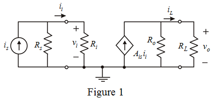
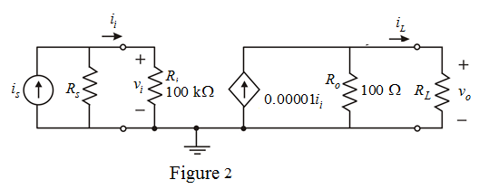

Consider, if  is varied keeping
is varied keeping constant, then write the conditions for and .
constant, then write the conditions for and .
Draw the circuit diagram of current amplifier.

Apply current division rule and determine the value of .
Determine the value of output current.
Substitute for in the equation.
Consider, if is varied keepingconstant, then write the conditions for and .
Calculate the relative change in load current.
Consider for maximum change in output current, the corresponding change in  is.
is.
That is,
Substitute for in the equation.
 is of the form
is of the form  .
. Write the value of input resistance of the form  .
.
Therefore, the value of input resistance is  .
.
Consider, if  is varied keeping constant, then write the conditions for and .
is varied keeping constant, then write the conditions for and .
Calculate the relative change in load voltage.
Consider for maximum change in output current, the corresponding change in  is
is .
.
Consider the value of input resistance,  is of the form
is of the form  .
.
Write the value of input resistance of the form  .
.
Therefore, the value of output resistance is .

Determine the intrinsic current gain of the circuit.
Therefore, the current gain is .
The input resistance is very high and output resistance is very low. The amplifier is trans-conductance amplifier.
Therefore, the amplifier is trans-conductance amplifier.